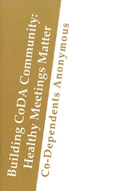
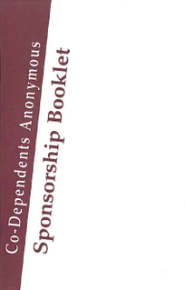

Til CoDA deilda:
- Bókafulltrúi deilda pantar með því að senda póst á bok@coda.is
- Bókavera Samstarfsnefndar CoDA tekur við pöntunni og gefur upp þá upphæð sem greiða á.
- Gjaldkeri deildar greiðir og sendir greiðslutilkynningu úr heimabanka á bok@coda.is og setur sem skýringu nafn deildarinnar.
- Bækur eru afhentar þegar greiðslutilkynning hefur borist á bok@coda.is
Deildir staðsettar úti á landi geta fengið bækur sendar sér að kostnaðarlausu (samstarfsnefnd greiðir fyrir þær til að jafnræðis sé gætt)
Bankanúmer Samstarfsnefndar CoDA á Íslandi
Samstarfsnefnd Coda á Íslandi kt: 690110-1720
Erlendar bækur 0311-13-301690; tilkynning sendist á: bok@coda.is
Íslenskar bækur 0311-26-069110; tilkynning sendist á: bok@coda.is/
Bækur. Hverri deild er í sjálfvald sett að verðleggja bækur sem seldar eru.
Coda bókin, í gormum blá kr 1.500,- leiðbeinandi verð úr deild er 2000 kr
”CoDA bókin er seld á flestum CoDA fundum og er grundvallarrit samtakanna. Bókin fjallar um meðvirkni og bata frá meðvirkni, þjónustu, spurningar og svör. “ ´Þýðing í sjálfboðavinnu af þýðingarnefnd prentuð í samskipti í samráði við www.coda.org

Co-Dependents Anonymous - Coda bókin á ensku, kr 3000,-
We offer this book, not only as a practical guide, but as a symbol of our own collective journey. It represents a cross section of our experiences, both joyous and painful, and it stands as a beacon to the codependent who still suffers. There is hope for changed relationships with a Higher Power, ourselves, and others. We can move out our our current, perhaps lifelong pain and into a new way of living. We now invite all who suffer from codependence to read our book in the hope that each of you may find what many of us have found – the hope and freedom of recovery. ”
Úrdráttur úr “Co-Dependents Anonymous”, bls. i. Kaupum hana af www.coda.org
The Daily Meditation Book - CoDA hugleiðing dagsins kr. 3000; Uppseld í bili
Þessi bók innheldur daglega CoDA- hugleiðingu fyrir alla daga ársins. Hugleiðingarnar eru skrifaðar af meðvirkum fyrir meðvirka. Keypt af www.coda.org

CoDA Vinnubókin í gormum. Vinnubók úr sporum og erfðavenjum, á íslensku kr. 2500, til deilda leiðbeinandi verð úr deild 3500 kr
Vinnubók á Íslensku þökk sé sjálfboðavinnu úr þýðingarnefnd Samstafsnefndar.
( Þýðing í sjálfboðavinnu, greitt fyrir prófarkalestur og prentun, í samráði við www.coda.org)
Bæklingar keyptir á www.coda.org
Am I Codependent? - Bæklingur, lítill kr. 300,-
” Many of us struggle with these questions: What is codependence? Am I codependent? We want precise definitions and diagnostic criteria before we will decide. Co-Dependents Anonymous, as stated in its Eighth Tradition, is a nonprofessional Fellowship. We offer no definitions or diagnostic criteria for codependence, respectfully allowing psychiatric and psychological professionals to accomplish that task. What we do offer from our own experience are characteristic attitudes and behavior patterns that describe what our codependent histories have been like.
We believe that recovery begins an honest self-diagnosis. We came to accept our inability to maintain healthy and nurturing relationships with ourselves and others. We began to recognize that the cause lay in long-standing destructive patterns of living. We have found these patterns fall into four major categories: denial, low self-esteem, compliance, and control.” Úrdráttur úr “Am I Codependent?”, bls. 1.
Attending Meetings Bæklingur, lítill kr. 300,-
” The four major building blocks of recovering in Co-Dependents Anonymous are meetings, working the Steps, sponsorship, and service. There are three aspects to gaining the most benefit from attending CoDA meetings: speaking, sharing, and listening.
Speakers at CoDA meetings have been invited to share their own experience, strength, and hope. Generally, people begin with a brief recounting of their childhood experiences which set them up for patterns of codependent behavior.
Most of us have been crippled by shame and fear, thus finding speaking among others, especially strangers, a very difficult task. We encourage people to begin slowly and carefully. It is the intention of every CoDA member and group not to ridicule or embarrass anyone.
We often assume that listening in a passive and easy activity, actually, to listen well requires a great deal of concentration and effort. If we are to benefit from attending meetings, we need to rely on our listening skills since rarely do we spend much or most of the time speaking or sharing. “ Úrdráttur úr “Attending Meetings”, bls. 1,2, og 3.

Building Coda Community. Bæklingur, stór kr. 1000
” Healthy meetings are an integral part of CoDA Fellowship, providing us with a safe space to learn about recovery. Recovery does not happen in isolation. CoDA’s Tradition One states, “Our common welfare should come first; personal recovery depends upon CoDA unity.”
A CoDA meeting is comprised of a group of people who come together around their shared desire for healthy and loving relationships. The group uses the Twelve Steps and Twelve Traditions of Co-Dependents Anonymous as the basis for working toward recovery. It is a place to find sponsorship and fellowship as well as the sharing of experience, strength, and hope. A strong sense of acceptance and community makes a meeting attractive to both the newcomer and old-timer.
The sense of community and belonging, a gift of our program, begins a the group level. A CoDA meeting is more than a place to tell our troubles. It is a place to identify with people life ourselves and to interact with people focused on similar goals – to develop and maintain healthy and loving relationships. “ Úrdráttur úr “Building CoDA Community: Healthy Meeting Matter”, bls. 1.
Carrying the Message Bæklingur, stór kr. 1000,-
” In this pamphlet, we will reflect on some of the concerns we all share in our recovery from codependence; the dilemma of when to say “no” or when and how to accept a responsibility or to make a commitment. We will also offer some solutions and methods suggested by many of our fellow members from a variety of CoDA groups.
Perhaps the first solution is to ask the Higher Power of our own understanding for guidance so that the way we approach service is right for each of us as individuals. If we choose to view being of service in a new way, we might see it as an opportunity to transform our thinking about helping, about giving, and about doing. “ Úrdráttur úr “Carrying the Message – Living the Twelfth Step”, bls.1.
Common Threads of Codependency. Bæklingur, stór kr. 1000,-
” As codependents we come in different flavors, from martyr to victim, from rebel to doormat. We may have different backgrounds and different issues, but we come to recognize certain traits in ourselves and in each other. Our purpose in this piece of literature is to examine these traits, these common threads of thought and behavior that are interwoven into this complex tapestry we call codependency.
We choose not to define codependency for two reasons. It is not our intent to decide whether or not anyone else is codependent. Our Third Tradition reminds us that the only requirement for membership in CoDA is a desire for healthy and loving relationships. We don’t even have to decide that we are codependent before joining Co-Dependents Anonymous. We do not presume to hold the ultimate answer to the codependency question. We simply share our own experience, strength, and hope. Each reader is free to choose what sounds relevant and to discard what does not. “ Úrdráttur úr “Common Threads of Codependency”, bls. 3.
Communication and Recovery. Bæklingur, lítill kr. 300,-
” Being simple and verbal are two basic communication skills that we need to develop in recovery. We seldom think about it, but what we say to others and ourselves – and how we say it – has profound impact on our lives. Our internal and external communication habits shape our thoughts, feelings, actions, and relationships – literally everything we experience in life. Indeed, poor communication makes our lives needlessly complicated. Not speaking up for ourselves and expressing our feelings in an open, honest, and healthy manner keeps us trapped in our codependency, a disease that for many members, is a disease of silence.
This pamphlet suggests some ways that we can free ourselves from our codependent communication patterns. We can develop a new awareness of our verbal habits and learn to make healthier choices about how we communicate with others and ourselves. “ Úrdráttur úr ”Communication and Recovery”, bls. 1.
Establishing Boundaries in Recovery. Bæklingur, lítill kr. 300,-
” Whether we are aware of them or not, we all have boundaries. This pamphlet explores what boundaries are and how they support us in developing healthy and loving relationships with others and ourselves.
Boundaries are limits. Boundaries separate one person, place, or thing from another. Boundaries are verbal or physical divisions that separate our identities, responsibilities, feelings, needs, and issues from other people’s.
Throughout the recovery process, we constantly rediscover that our first responsibility is always to ourselves. Boundaries help us to clarify where our responsibilities end and where other people’s begin. By establishing healthy boundaries, we slowly learn to take care of our issues and recognize that others have the same privilege. Boundaries fall in several categories that include different aspects of our lives, such as: spiritual, social, sexual, physical, emotional, intellectual. “ Úrdráttur úr ”Establishing Boundaries in Recovery”, bls. 1.
Experiences with Crosstalk. Bæklingur, kr. 1000,-
” Perhaps one of the most difficult things for many of us to understand and practice in a CoDA meeting is the custom of “no crosstalk. It is generally accepted throughout the Fellowship that no crosstalk is important, but there is less consensus on exactly what constitues crosstalk and how best to deal with it when it occurs. The Fellowship offers this booklet in order to share many experiences about crosstalk including how different groups choose to define and deal with it.
Tradition Four reminds us: “Each group should remain autonomous except in matters affecting other groups or CoDA as a whole.” Our policy of no crosstalk is important for CoDA as a whole; however, each group is free to choose how to implement this principle for itself. CoDA’s no crosstalk policy is a guideline, not a regulation, but in our experience, groups that support the no crosstalk policy have healthier dynamics, better attendance, and a longer lifespan than groups that do not. “ Úrdráttur úr ”Experiences with Crosstalk”, bls. 7.
Making Choices. Bæklingur, stór kr. 1000,-
” Most of us came into this Fellowship with a lot of self-doubts. Often what we affirmed was negative, self-destructive, and self-defeating. These invalidating thoughts represented what we had come to believe about ourselves and they were based on messages from our past, some spoken, others unspoken. Rarely were they positive or nurturing. Nonetheless, we incorporated these negative statements into our beliefs about who we were. They included things like:
- I am incompetent and incapable.
- I’m worthless and undeserving.
- I’m unimportant, even to the people who love me.
- No matter what I do, I’ll always be unattractive.
- I’ll never measure up.
- I have no right to exist. “
Úrdráttur úr ”Making Choices”, bls. 4.
Newcomers Handbook. Bæklingur, stór kr. 1000,-
Þessi bæklingur sem er upp á 72 blaðsíður inniheldur skilmerkilega lýsingu á CoDA prógraminu.
Auk þess að innihalda inngangsorðin (the Preamble), sporin 12, erfðavenjurnar 12, loforðin 12 lýsir hann hinum fjórum þáttum CoDA prógramsins:
CoDA fundaform
Leiðbeiningar um miðlun reynslu
Leiðbeiningar um sporavinnu
Upplýsingar um trúnaðarmennsku
Í bæklingnum má einnig finna reynslusögur CoDA félaga.
Peeling the Onion - Bæklingur, stór kr. 1000,-
” At CoDA meetings, we often hear people talk about other addictions: alcohol, drugs, exercise, food, gambling, spending, work, etc. During the recovery process, as we examine our behaviors, many of us discover addictions to love, sex, and relationships. Common denominators include control, intensity, drama, distorted thinking, and emotional immaturity. These manifest as addictive and/or avoidant behaviors. At the root of all of these behaviors is the absence of intimacy with ourselves, our Higher Power, and others. Through examining the patterns and characteristics of our codependence on a deeper level, we peel back more and more layers of the onion. As we explore, we gain insight. We may experience tears of pain, relief, discovery, regret, and joy. The CoDA Preamble states, “The only requirement for membership is a desire for healthy and loving relationships. “In order to learn about healthy relationships, we will first take a look at some aspects of unhealthy relationships.” “ Úrdráttur úr “Peeling the Onion”, bls. 5.

Sponsorship Booklet. Bæklingur, stór kr. 1000,-
” The need to have a booklet on Sponsorship was first acknowledged in the small groups. Sponsorship has been a part of our program at the local level of CoDA from the very beginning, but there has been very little instruction or guidance on the subject.
This Booklet attempts to fill the need for a piece of literature that provides guidance to codependents looking for sponsors and for groups wanting to foster sponsorship. The information offered here represents a variety of experiences gathered from a number of Co-Dependents Anonymous members.
Sponsorship in CoDA is essentially different from sponsorship in other Twelve Steps groups because of the nature of the disease of codependence. To be effective, CoDA sponsorship depends on the development of healthy boundaries on control issues such as advice-giving, care-taking and rescuing.“ Úrdráttur úr ”Sponsorship Booklet”, bls. 4.
Sponsorship in CoDA Vara ekki til í augnabliknu en til á Íslensku sem trúnaðarmenska
Bæklingur, lítill kr. 300,-
” Those of us in Co-Dependents Anonymous who have benefited from working the Twelve Steps with a sponsor would like to share some thoughts with you based on our experience in CoDA. Our suggestions are not intended to be rules. We urge you to try what feels right to you. The purpose of sponsorship is to develop a one-to-one relationship with a more experienced CoDA member. A sponsor is willing to share experience, strength, and hope in support of your continuing recovery and his/her own. “ Úrdráttur úr ”Sponsorship in CoDA”, bls. 1.
The Affirmation Booklet - Bæklingur, lítill kr. 600,-
” This booklet is a compilation of affirmations submitted by codependents for codependents. Affirmations are short positive statements, expressed in the present, that reinforce some part of our recovery. They are a method of focusing on the changes we want to make in our lives. “ Úrdráttur úr “The Affirmations Booklet”, bls 1.
Tools for Recovery - Bæklingur, stór kr. 1000,-
” Most people think of tools as hammers, screwdrivers, wrenches, and other items that are used in construction. In CoDA, we use our own variety of tools to create change in our lives. Our blueprint for recovery from codependence includes following the Twelve Steps and Twelve Traditions, attending meetings, working the program with a sponsor, trusting in a Higher Power, and incorporating recovery tools into our daily lives.
Many of us came to our first CoDA meeting because our lives were in turmoil. Situations were out of control, and we were miserable. We hoped to find information on how to fix things that weren’t working. We listened to other codependents share about how they used recovery tools in their lives, and we saw how they had grown through the program of Co-Dependents Anonymous. We wanted what they had. “ Úrdráttur úr ”Tools for Recovery”, bls. 5.